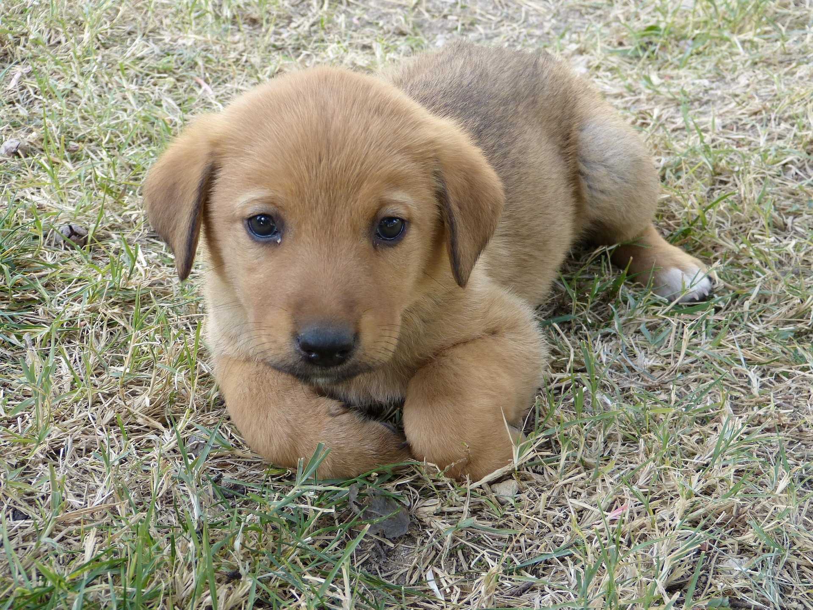
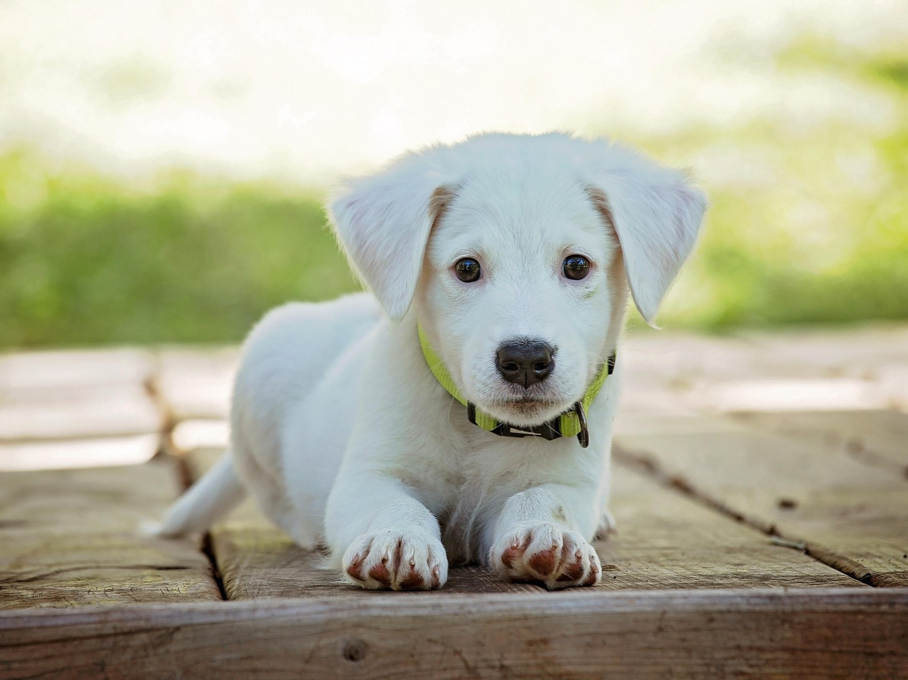
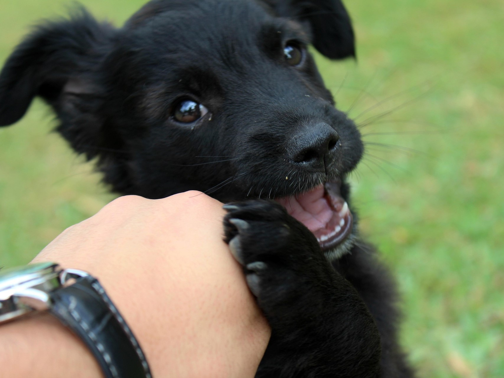
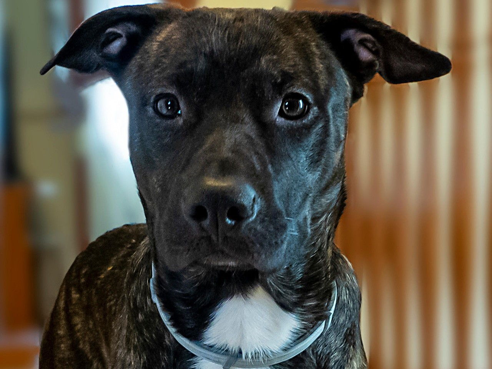
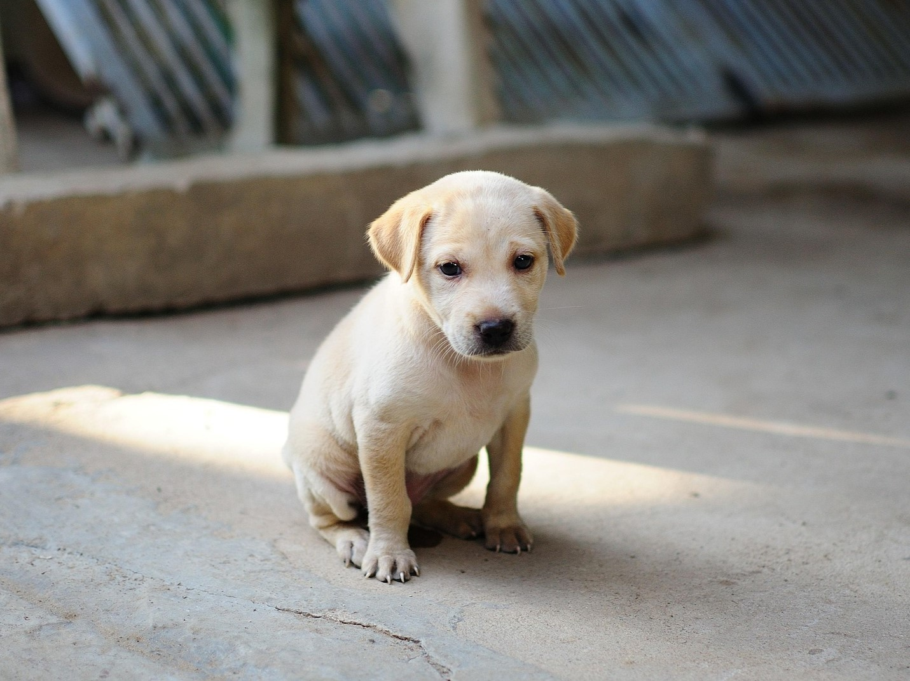

Cada cão tem sua própria personalidade, rotina e necessidades.
Por isso, procuramos apresentar seu comportamento de forma clara para ajudar você a encontrar um companheiro que combine com sua realidade.
Nina

Nina costuma ser tranquila com as pessoas e gosta de receber atenção.
É brincalhona, mas também aproveita momentos mais calmos.
Ainda está sendo acompanhada para entendermos melhor como se comporta em diferentes ambientes e com outros cães.
Fênix

Fênix é bastante ativo e gosta de brincar e explorar o ambiente.
Precisa de uma rotina com espaço para gastar energia e receber atenção.
Durante os passeios, pode ficar mais agitado, por isso é importante que o adotante tenha disposição para trabalhar sua educação e adaptação.
Kiko

Kiko tem um comportamento mais tranquilo e costuma procurar a companhia das pessoas.
Gosta de ficar por perto e tende a se adaptar bem a momentos mais calmos.
Como qualquer cão em processo de adoção, pode precisar de um período de adaptação antes de mostrar completamente sua personalidade.
Stark

Stark é um cão que está à procura de um lar cheio de carinho e atenção.
Sua personalidade ainda está sendo conhecida, por isso é importante respeitar seu tempo de adaptação ao novo ambiente.
Tobby

Tobby é um cão que merece uma família responsável e disposta a oferecer cuidado, carinho e segurança.
Ele ainda está em processo de adaptação e precisa de tempo para demonstrar sua personalidade.